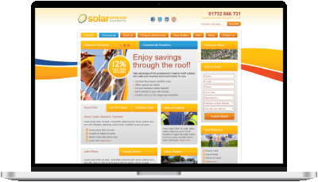
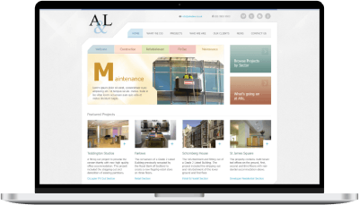
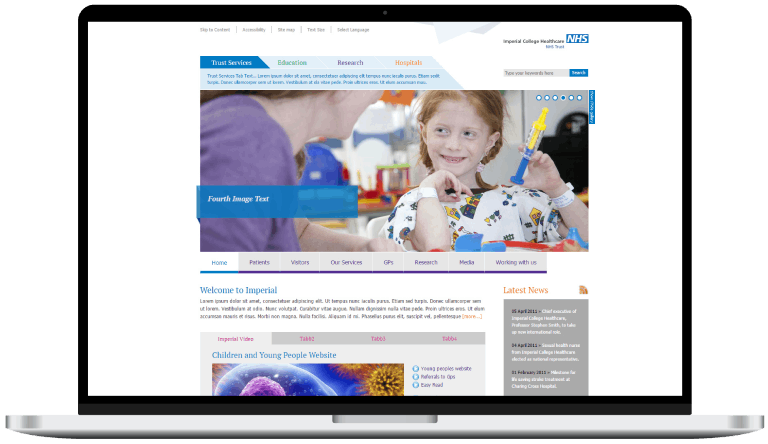

WebLicious: End-to-end Web Solutions
The Solo Full-Stack Entrepreneur
A decade of building tailored websites, digital marketing strategies, and maintenance services to small businesses.
Context & Contribution
Market Context: Portugal's Nascent Digital Landscape
In 2008, Portugal's digital landscape was in its nascent stages. Internet penetration stood at only 50%, and e-commerce adoption was a mere 6%. This presented a dual challenge and opportunity: a vast majority (67%) of Portuguese SMEs lacked any online presence, yet the digital advertising market was a growing €45 million. The global financial crisis simultaneously heightened the need for cost-effective digital solutions, pushing businesses to seek recession-resistant marketing channels. The market was served by a fragmented landscape of 50-100 web design companies, indicating an undersupplied and ripe environment for a strategically positioned agency.
My Contribution: The Solo Full-Stack Entrepreneur
As the founder of WebLicious, I operated as a multifaceted professional: Marketer, Designer, Developer, and Manager. This holistic involvement allowed me to personally deliver end-to-end web solutions, encompassing strategy, design, development, marketing, hosting, and SEO. I personally built and launched over 50 tailored websites, integrating customized CMS platforms like WordPress and Google Analytics for performance tracking. My role extended to personally designing omni-channel campaigns (social media ads, newsletters, PPC, print) and managing the entire product lifecycle, from defining value propositions and establishing product-market fit to developing go-to-market strategies and leveraging customer feedback for continuous improvement. This solo-entrepreneurial approach meant direct oversight and hands-on execution across all business functions.
- Personally delivered end-to-end web solutions: strategy, design, development, marketing, hosting, and SEO.
- Built and launched over 50 tailored websites, integrating customized CMS and analytics.
- Designed and executed omni-channel campaigns (social media ads, newsletters, PPC, print).
- Managed the entire product lifecycle from value proposition to continuous improvement.
- Ensured direct oversight and hands-on execution across all business functions.
Strategy & Business Model
Challenges & Risks: Navigating Early Digital Adoption
The main challenges identified in the 2008 business plan included the early stage of digital adoption in Portugal, potential client resistance to digital investment during an economic downturn, and competition from existing, albeit fragmented, web design companies. Operational risks also included the need for continuous skill upgrades in a rapidly evolving tech landscape and managing client expectations with a small team, a particular challenge for a solo founder balancing multiple roles.
Core Assumptions: Foundations for Growth
WebLicious's strategy was built on several core assumptions:
- Growing Digital Adoption: Despite the low initial figures, internet penetration and e-commerce adoption would steadily increase, driving demand for web services.
- SME Digital Need: Portuguese SMEs would recognize the necessity of an online presence for competitiveness and survival, especially during economic downturns.
- Value-Driven Decisions: Businesses would prioritize cost-effective, high-value solutions over premium-priced alternatives.
- Maintenance as Recurring Revenue: Ongoing support and maintenance services would be a crucial source of recurring revenue and client retention, providing stability for a lean operation.
Showcase Projects
Solar Advanced Systems
A comprehensive website for a specialist in solar energy solutions, designed to showcase advanced offerings. This platform detailed diverse solar solutions (domestic/commercial) and product specifications, with a design that prioritized building confidence and trust through clear, informative visuals. The goal was to effectively communicate expertise in solar energy solutions, establishing a valuable resource for prospective clients seeking detailed product information.
Alexander & Law Property Services
A professional corporate website with a customized private area for a well-established property services company, underscoring long-term client relationships. This platform presented diverse services, highlighted its portfolio, and communicated organizational values to convey reliability and expertise through a clean, professional aesthetic. It served as an effective digital prospectus, enhancing online visibility and reinforcing the company's dependable brand identity.
Imperial College NHS Trust
A large-scale, accessible, and comprehensive healthcare landing page for a leading academic health science center, serving as a primary information source for services, education, and research. This platform facilitated extensive information dissemination, employing meticulous information architecture to manage and present vast amounts of diverse, critical content. The aim was to significantly enhance public engagement with the Trust's clinical services, education, and research, establishing an indispensable user-centric digital hub.
Armazém de Arquitectura (Architecture & Interior Design Studio)
A visually rich website with a customized private area for an established architecture and interior design studio, designed to reflect its sophisticated aesthetic and "gallery" concept. This visually-driven platform prominently featured portfolio display to effectively translate a physical gallery experience into a digital format focused on visual storytelling, thereby extending the studio's brand online and attracting discerning clients by effectively showcasing their artistic approach.
Totuus (Legal Market Consulting)
A comprehensive website for a consulting firm specializing in the legal market, committed to providing candid, strategic guidance. This platform articulated their services, expertise, and core values, distilling complex methodologies into clear, digestible web content to foster client trust and streamline comprehension of their services. This approach established a pivotal digital asset, robustly supporting lead generation within the legal market.
Anyshire (NHS Health Authority)
A highly accessible, user-friendly template website for NHS organizations, addressing the critical need for a central digital hub with universal health information access. This WCAG 1.0 compliant platform provided health information and services, employing a rigorous user-centered design approach to serve diverse public audiences and offer a standardized framework for public health communication. It became a vital, trusted online platform, significantly enhancing public access to NHS information and promoting inclusivity.
Clandestino (E-commerce for a Shoe Brand)
An intuitive e-commerce website for a shoe brand aiming for a minimalist, elegant online representation of its "Pure Collection." This platform showcased collections and facilitated a seamless shopping experience through a visually driven design with a clean, uncluttered interface. Its purpose was to effectively highlight the brand's minimalist aesthetic and streamline the shopping process, directly driving sales.
Modoframe (Building System)
A comprehensive website with a customized private area for an innovative, modular building system, designed for client education on its global applicability. This platform introduced the system, explained its benefits, and generated commercial interest to translate complex engineering concepts into an easily comprehensible and visually appealing format. This effectively communicated the unique value proposition, serving as a crucial marketing tool for education and lead generation.
Cortius (Textiles)
A brochure website with a customized private area for a textiles company dedicated to export, focused on providing quality fashion items with speed and competitive pricing. This platform presented detailed company information, production capacity, delivery deadlines, and market presence to effectively communicate their commitment to quality, quick response, and versatility. It established a robust online presence, supporting their export strategy and fostering heightened confidence from customers and partners.
Newstar Electrical (Electrical Services & Solar Panels)
A persuasive website for an electrical services company with a strategic focus on solar panel installations, aimed at promoting services, highlighting solar benefits, and generating leads. This platform featured a benefit-driven design incorporating strong calls-to-action to optimize lead conversion for renewable energy solutions. It served as a powerful marketing and educational tool, effectively driving qualified inquiries for electrical and solar panel services.
Achievements & Impact
Key Takeaways
Lessons Learned from Solo Entrepreneurship
Holistic Approach Drives Value
Offering a comprehensive suite of digital services as a single point of contact simplifies processes for clients and ensures cohesive execution.
Strategic Market Positioning is Crucial
Identifying and serving an underserved market segment with tailored, affordable solutions was key for rapid acquisition and sustained growth.
Recurring Revenue Ensures Stability
The "Maintenance-First Model" and WebGuard plans were critical for a stable revenue stream in a project-based industry.
Adaptability & Multidisciplinary Expertise
Operating as a solo founder fostered constant adaptation and a broad range of skills, enhancing problem-solving and entrepreneurial agility.
Transition and Future Focus
After nearly a decade immersed in the dynamic startup culture of WebLicious, I was ready for new challenges that involved collaborating with larger, multidisciplinary teams. My professional interests had evolved, drawing me towards a deeper focus on user experience (UX), product design, and the rapidly expanding field of mobile applications. To ensure a smooth and responsible conclusion to this significant chapter, I strategically sold my regular accounts to a trusted competitor, guaranteeing continuity of service for my valued clients and allowing me to transition to new professional endeavors on a high note. This demonstrated not only business acumen in exiting, but also a strong commitment to client welfare.
Get in touch if you want a deeper dive or to discuss how my skills and expertise can help on your challenges.
More about me on LinkedIn. Let's connect!